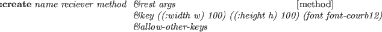

The FilePanel is an application window for the interactive manipulation
of files and directories.
Using cd and go-up buttons, any directory can be visited
and files contained in the directory are displayed in the ScrollTextWindow
below.
Text files can be displayed in different windows (textViewPanel).
Files can also be printed, removed, and compiled by simply cliking buttons.
When a file is printed, a2ps file | lpr commands are executed
in a forked process.
Figure 18:
FilePanel window
|  |
2016-03-23